Born from Sacramento, Dance Gavin Dance, the band home to iconic names in the post-hardcore scene like the father of Swancore, Will Swan and, dirty vocalist Jon Mess, and Macbook Man Jonny Craig. Dial it down and lean back as we dive into the chaotic harmony brought upon by unpredictable harsh vocals over strong vocal melodies served on a bed of dynamic guitar riffs.
Uneasy Hearts Weigh The Most - Dance Gavin Dance 10 Year Anniversary (2015). This performance feautured all their vocalists on stage. At the time, Andrew Wells was the rhythm guitarist.
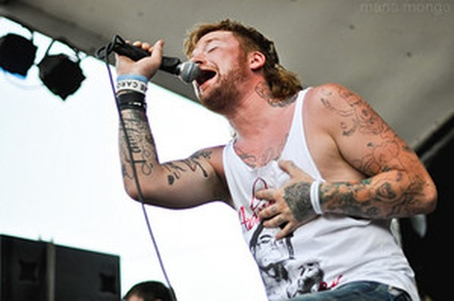
Known for his "angelic" voice and melodic vocal riffs that cut through the dirty guitars and screaming, Jonny Craig was the bands first frontman and clean vocalist. Jonny, alongside Jon Mess, Will Swan, Matt Mingus, Eric Lodge, and Sean O'Sullivan formed the early days of DGD and released an EP "Whatever I Say is Royal Ocean" followed by their first album "Downtown Battle Mountain" aka DBM. This era of DGD featured a sound many fans would call "raw" as these albums featured heavy guitars, heavy screaming, and high energy. WISIRO was an introduction and felt more indie. The year after WISIRO's release, DGD came out with DBM which solidified their sound and identity as a band. DBM brought upon the raw energy many fans love and come back to. Jonny left after DBM later on returning for "Downtown Battle Mountain II" aka DBM2 from 2010 to 2012 once again frontmanning and touring for the band. This album featured a much more expiremental sound contrasting Jonny's first album with the band. Different style, same amazing vocal performances and nonsensical lyrics that fans know and love.
| Year | 2006 |
|---|---|
| Title | Whatever I Say Is Royal Ocean |
| Album Cover | 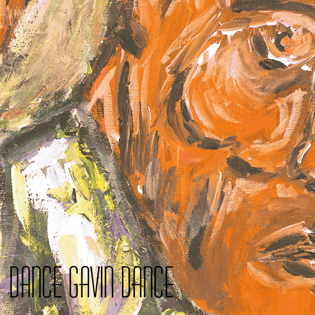 |
| Year | 2007 | 2011 |
|---|---|---|
| Title | Downtown Battle Mountain | Downtown Battle Mountain II |
| Album Cover | 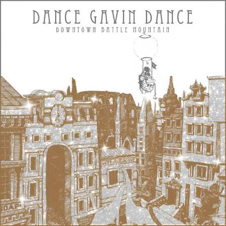 |
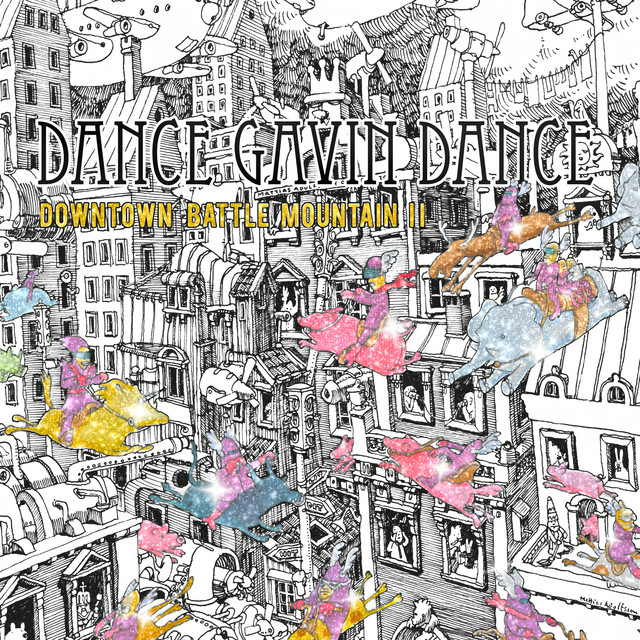 |
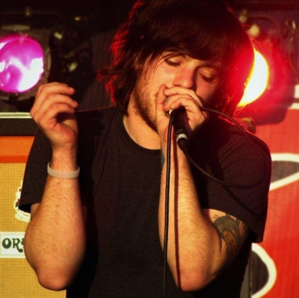
Months after Jonny Craig's first departure from the band, Kurt Travis stepped in as the band's lead vocalist performing with the band only after two weeks of practice. Coming from a different background of music, Kurt brought a unique energy to the band which reflected on the two albums he produced with DGD, Dance Gavin Dance and Happiness. Their sound featured a more laid-back vibe which was catchy, playful, and emotional. During this period, the band went through major transitions as dirty vocalist Jon Mess had quit alongside their bassist after their self-titled album. Their next album, Happiness, featured guitarist Will Swan doing dirty vocals and occasionally, Kurt Travis himself. Will Swan rapping and screaming, and an era without Jon Mess made for a very distinct and memorable sound during Kurt Travis era.
| Year | 2008 | 2009 |
|---|---|---|
| Title | Dance Gavin Dance (Self-Titled) | Happiness |
| Album Cover | 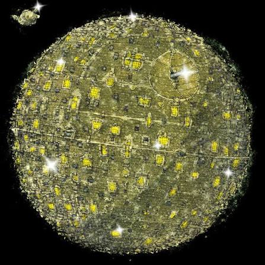 |
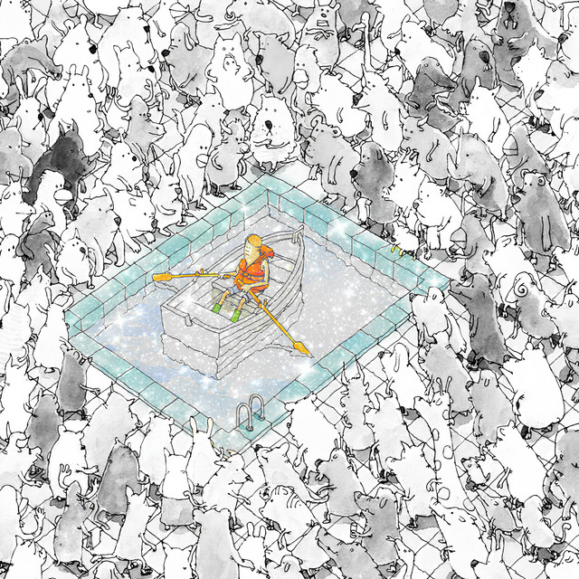 |
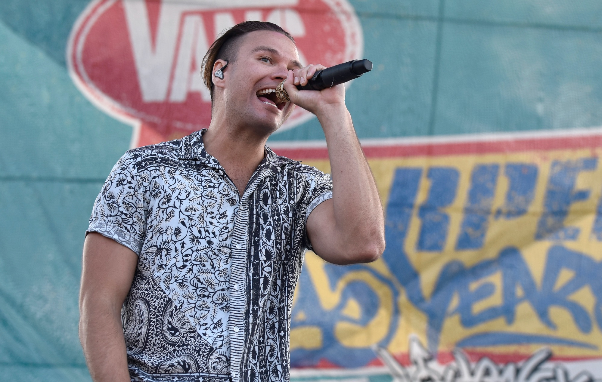
Tilian Pearson's run may be the most recognizable and acknowledged era of DGD being the longest era of a single lead vocalist. Jonny brought raw vocal talent and energy, Kurt brought a new influence, while Tilian brought stability and longevity to the band. Under Tilian's run, DGD's sound continuously evolved and matured into a very recognizable identity. Tilian's vocals are high-pitched, smooth, and sharp which rounded out the band's overall sound. Tilian did six albums with DGD before splitting up with the band officially on 2024. His run with the band started rocky as his first album received mixed opinions on the vocalists capability. However, soon after, Tilian found his place in the bands mix and came out with Mothership, the band's most successful album solidifying his era with DGD.
| Year | 2013 | 2015 | 2016 | 2018 | 2020 | 2022 |
|---|---|---|---|---|---|---|
| Title | Acceptance Speech | Instant Gratification | Mothership | Artificial Selection | Afterburner | Jackpot Juicer |
| Album Cover | 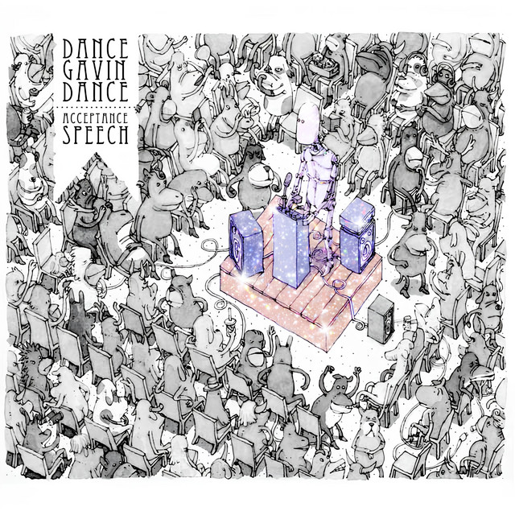 |
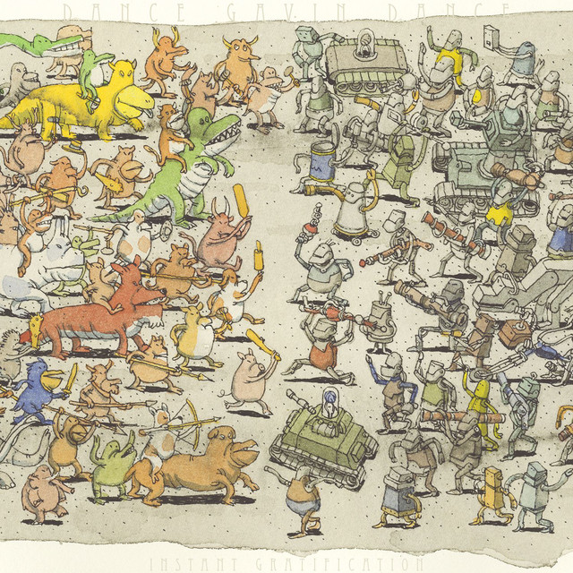 |
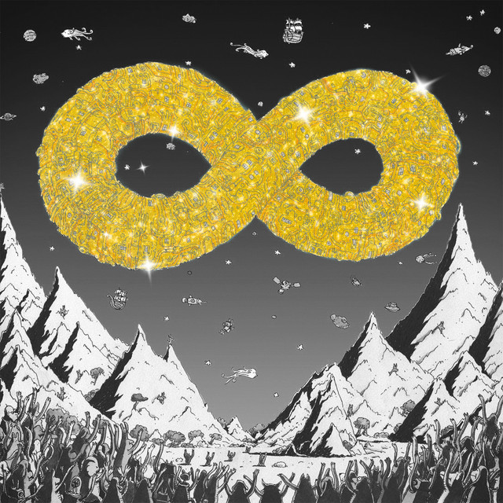 |
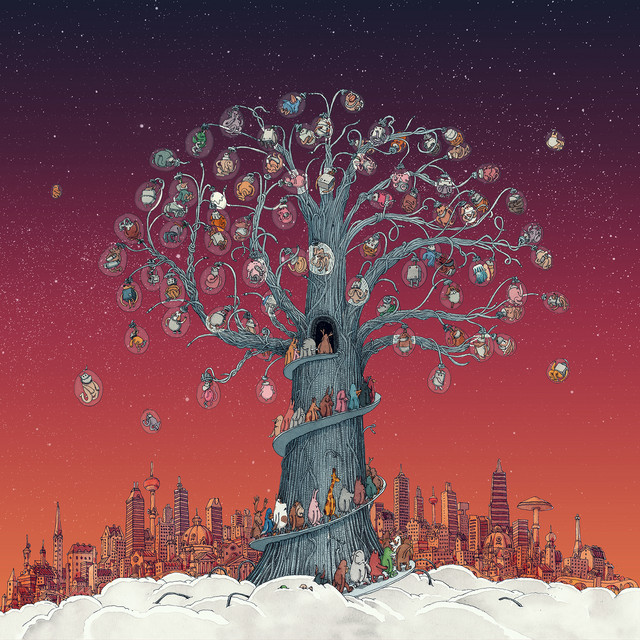 |
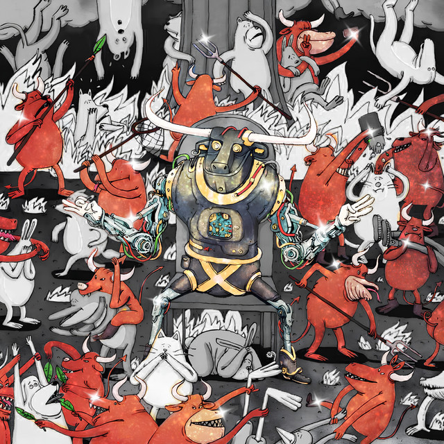 |
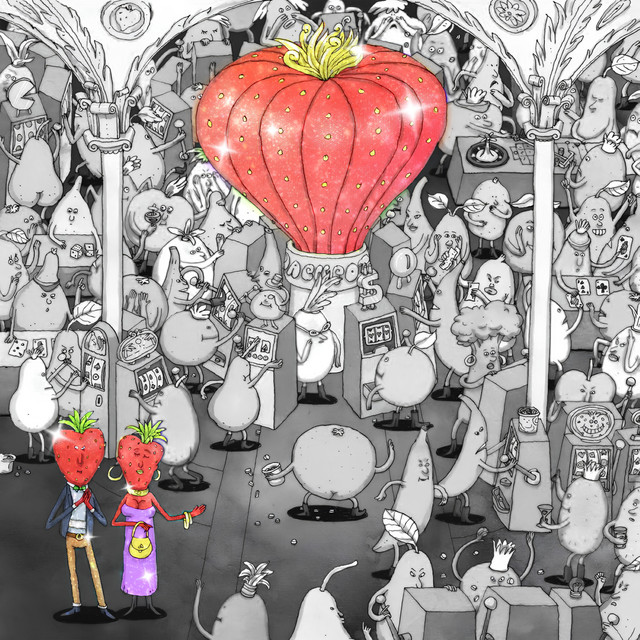 |
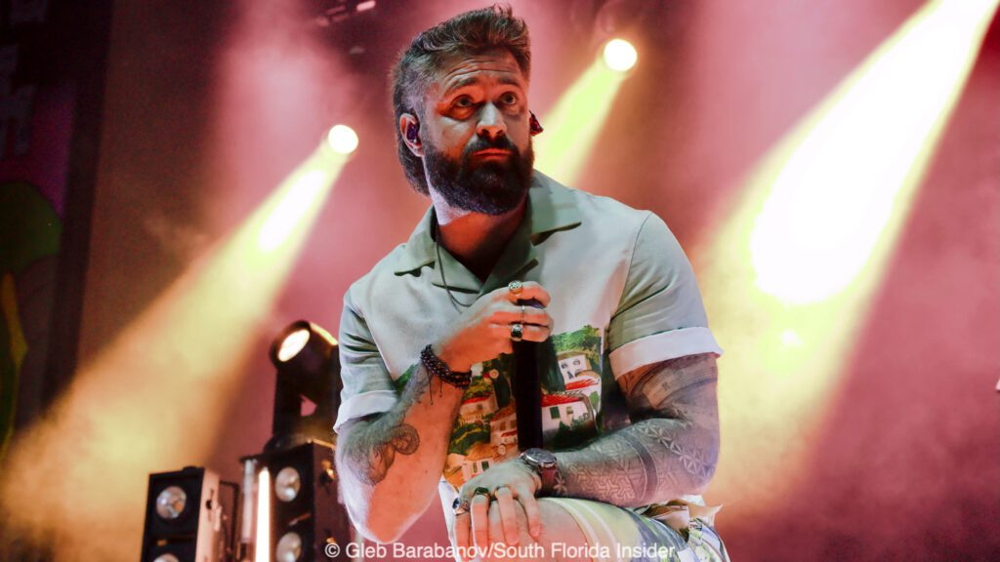
Before stepping in as their current vocalist, Andrew Wells has been involved with DGD since 2015. He was the frontman fand guitarist for Eidola and from 2015-2024, he was the rhythm guitarist for DGD. Later on in his DGD career he started doing backing vocals. He performed lives with the band on tours as an unofficial member until 2021 when he officially became a member. Tilian Pearson later had a short departure from DGD where Andrew Wells stepped in as the lead vocals for some performances. Many fans questioned his ability and whether he would be able to take Tilian's place. Some even speculated and hoped Jonny Craig would make his third reappearance as the band's frontman which ultimately did not happen. Despite the pressure and expectations from fans, Andrew Wells showed he had more than what it takes to lead the band as the vocalist. He has a wide range vocally and a solid foundation which allows the band to perform some of their older songs Tilian couldn't do. With their most recent album, Andrew showed us yet another side to DGD and solidified his spot as the band's lead vocalist and front man.
| Year | 2025 |
|---|---|
| Title | Pantheon |
| Album Cover | 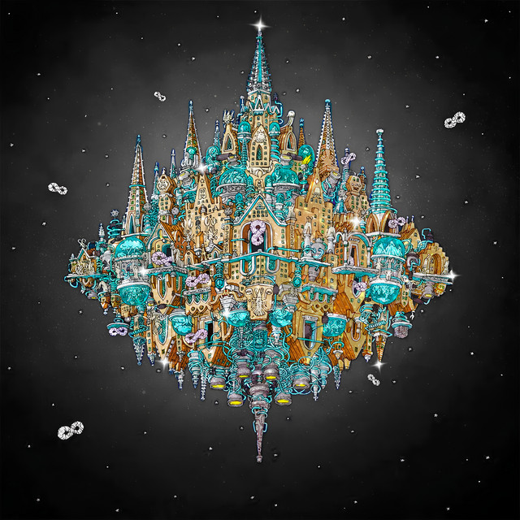 |
Carl Barker from Happiness - Cover by Raphael Gamboa
Spooks from DBM2 - Cover by Raphael Gamboa
Tell us your dream DGD setlist and a bit about yourself!